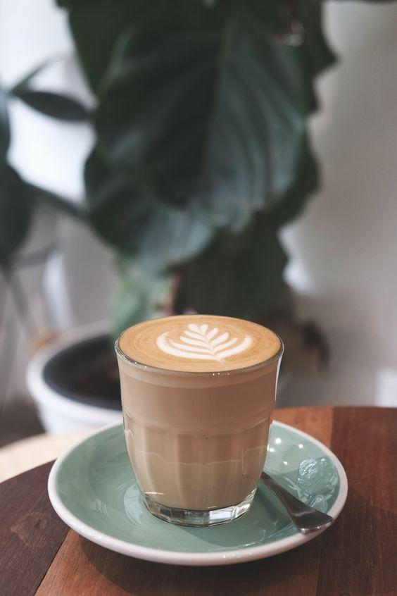

| COFFEE & CAKES |
FLAVOR |
DESCRIPTION |
PRICE |
SPECIAL COFFEE & CAKES |
|---|
| Vanilla latte |
 |
The vanilla latte recipe is warm and cozy, pairing espresso with milk and homemade vanilla syrup! The ideal drink for any coffee lover. |
₱110/short,
₱120/tall,
₱145/grande,
₱160/venti |
| Cinnamon Chocolate Milkshake |
|
Cinnamon and chocolate have always been a perfect combination. This cinnamon chocolate milkshake becomes better with some rich homemade ice cream and homemade chocolate syrup to top it off. |
₱120/short,
₱140/tall,
₱155/grande,
₱165/venti |
| Peanut Buttercup Milkshake |
|
This peanut butter milkshake is a rich, delicious concoction you will want to make again and again. I could imagine a drizzle of chocolate sauce or a dollop of chocolate whipped cream as a garnish. It was easy to prepare and delicious! |
₱110/short,
₱120/tall,
₱150/grande,
₱190/venti |
| Iced Caramel Mocha Coffee |
 |
Mochas are already a combination of two delightful ingredients, coffee and chocolate. That’s one good combo right there. Now, a caramel mocha coffee brings in a third crowd-pleasing flavor — caramel. |
₱90/short,
₱120/tall,
₱145/grande,
₱155/venti |
| Iced Matcha Green Tea |
 |
In addition to Iced Matcha Green Tea, you can experiment by adding Gotcha Matcha Cafe Grade Matcha to yogurt shakes, milk
drinks and cocktails. Matcha also makes the perfect green tea latte, hot or cold. |
₱115/short,
₱120/tall,
₱145/grande,
₱160/venti |
| cheats opera cake |
 |
A traditional opera cake is a layered cake that consists of layers of almond joconde soaked with coffee syrup, with alternating layers of coffee French buttercream and ganache, and topped with a chocolate glaze. |
₱65/1slice |
| cinnamon cakes |
 |
Each bite of this Cinnamon Cake is perfectly sweet, soft, and oh-so comforting! Bake this perfectly moist cake brimming with cinnamon, layer with sweet buttercream frosting, and top with a sprinkle of cinnamon sugar. |
₱40/3pcs |
| Mocha Coffee cakes |
 |
This mocha cake is moist, fluffy and packed with chocolate and coffee flavor. Between each layer you'll find a mocha buttercream, chocolate ganache and chopped chocolate covered espresso beans. |
₱80/5pcs |
| Chocolate Toffee Crunch Cake |
 |
is Chocolate Toffee Crunch Cake is like the lovechild of coffee cake and chocolate cake! This decadent cake features a moist, fudgy chocolate cake base that is incredibly easy to make and jam-packed with rich chocolate flavor. Forget the frosting |
₱60/1slice |
| double coffee chocolate cake |
 |
DENSE, FUDGY COFFEE CHOCOLATE CAKE WITH RICH, DARK CHOCOLATE AND COFFEE FROSTING TOPPED WITH A MOUNTAIN OF CHOCOLATE MALT BALLS.
|
₱55/1slice |